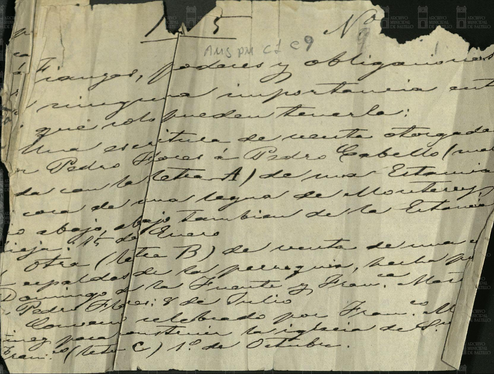

Lorenzo García · Tomás García · Francisco García

| Fondo | Presidencia Municipal (PM) |
| Firma AMS | AMS, PM, c 1, e 9, d 1, 1 f |
| Fecha | sin fecha en el catálogo |
| Descripción de la ficha del catálogo (tal cual) | Pedro Flores transfiere la tutela y cuidador de los menores Tomás y Francisco al hermano mayor Lorenzo García. |
| Id de ficha en el portal | 43822 |
| Personas indexadas en la ficha | Pedro Flores, Tomás García, Francisco García, Lorenzo García |
Lectura paleográfica parcial. Lo que no se lee con certeza está marcado [ilegible] o [duda: …] y no se toma como dato.
Imagen 1: es una hoja moderna (letra de los siglos XIX–XX) que resume el contenido del legajo, no el documento colonial.
«… Fianzas, poderes y obligaciones de ninguna importancia, sino que solo pueden tenerla: una escritura de venta otorgada por Pedro Flores a Pedro Cabello (letra A) de una estancia con [ilegible] … legua de Monterrey … también de la estancia … de Enero … otra (letra B) de venta de una [ilegible] … parroquia …» [duda en varias palabras]
Sello a lápiz: «AMS PM c1 e9».
Imagen y ficha: Archivo Municipal de Saltillo, Sefarad MX. Fuente: Archivo Municipal de Saltillo, portal del archivo digital (Presidencia Municipal). Verificado y avalado por Sefarad MX · genealogiasefardi.site.